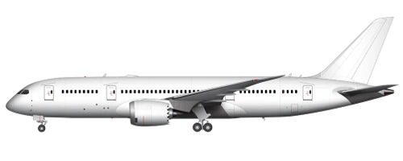

Boeing 787 Dreamliner

787-8
787-9
787-10
Game Stats
Other Information
Game Stats
Other Information
Game Stats
Other Information
The Boeing 787 Dreamliner is a long-range, twin-engine aircraft designed to be highly efficient for point-to-point routes.
In-Game
The Boeing 787 Dreamliner is a long-range, twin-engine aircraft designed to be highly efficient for point-to-point routes.
In-Game
The Boeing 787-8 has outsold related planes (See infobox), as it currently has sold around 1400 units. The 787-9 and 787-10 are also quite popular, with the 787-9 hitting 500 and the 787-10 hitting 300 units in circulation.
Specs
Trivia
- There was a planned 787-3 to be short ranged, but ultimately was never produced.
- Battery problems caused some lithium-ion batteries to catch alight, causing the FAA to issue an emergency airworthiness directive, and grounding all American-based 787s.
- The 787-9 was on the world's longest flight between Papeete and Paris, covering 15,715km of distance. The route was scheduled for March and April of 2020. This also makes it the world's longest domestic flight (although in AC, this would wouldn't be true).